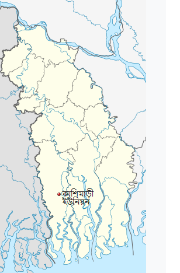

কাশিমাড়ী ইউনিয়ন
কালের স্বাক্ষী বহনকারী খোলপেটুয়া নদীর তীরে গড়ে উঠা শ্যামনগর উপজেলার একটি ঐতিহ্যবাহী অঞ্চল হলো ২নং কাশিমাড়ী ইউনিয়ন । উপজেলা সদর থেকে পূর্ব দিকে প্রায় ১০ কিলোমিটার দূরে কাশিমাড়ী বাজার সংলগ্ন ইউনিয়নটির অবস্থান। শিক্ষা, সংস্কৃতি, ধর্মীয় অনুষ্ঠান, খোলাধুলা সহ বিভিন্ন ক্ষেত্রে তার নিজস্ব স্বকীয়তা আজও সমুজ্জ্বল।
এক নজরে কাশিমাড়ী ইউনিয়নের মৌলিক তথ্য

| আয়তন ৩৩.৪১ বর্গ কি. মি. | মাদ্রাসা ৫ টি |
| জনসংখ্যা ৩১,৫১৯ জন(পুঃ ১৬,২৪৪, নারী-১৫,২৭৫) | শিক্ষা হার ৪৫% |
| ট্যাক্স হোল্ডার ৬,৮৮২ টি | প্রাঃ স্কুল ১৫ টি |
| ভোটারর সংখ্যা ১৮,১৬৭ জন | পাঞ্জেগানা মসজিদ ১৫ টি |
| গ্রাম ১০ টি | জামে মসজিদ ৩৯ টি |
| ০-৫ বছরের শিশু ৩৩২১ জন ( ছে.১৬৫২,মেয়ে-১৬৬৯) | মাদ্রাসা ৫ টি |
| ১০-১৮ ব. কিশোরী ৬৩৯৮ জন(ছে ৩৩৯৬ জন মেয়ে ৩০০২ জন) | কাচাঁ রাসত্মা ৬৯ কি. মি. |
| প্রতিবন্ধী ২৪৫জন (নারী-১২১,পুঃ-১২৪) | ইটের সোলিং ৩৫ কি. মি. |
| হত দরিদ্র পরিবার ৪০২২টি | পাকা রাসত্মা ১৪.৫ কি. মি. |
| দরিদ্র পরিবার ১৭৮৯ টি | ওয়াপদা রাসত্মা ৪.৬ কি. মি. |
| নিমণ মধ্যবিত্ত পরিবার ৬৯৩ টি | ক্লাব ১৩ টি |
| মধ্যবিত্ত পরিবার ২৭১ টি | ঝুকিপূর্ণ এলাকা ১১ কি. মি |
| ধনী পরিবার ১০৭ টি | হাট/বাজার ৪ টি |
| মিষ্টি পানির পুকুর ৭০ টি | সাইক্লোন সেন্টার ৪ টি |
| খাল ২৯ কি. মি. | স্বাস্থ্য সম্মত পায়খানা ৪৮৮৭ টি |
| নদী ৪.৫ কি. মি. | যৌথ পায়খানা ১২৭৯ টি |
| কলেজিয়েট স্কুল ২ টি | পায়খানা নাই ৪১৯ টি |
| হাই স্কুল ৩ টি | ইউনিয়ন স্বাস্থ্য কেন্দ্র ১ টি |
| ব্রীজ ১৩ টি | ভূমি অফিস ১ টি |
| কালভার্ট ৪৪ টি | আশ্রয়ন প্রকল্প ১ টি |
| কমিউনিটি ক্লিনিক ৩ টি | |
| গুচ্ছ গ্রাম ১ টি | পি এস এফ (সচল) ১৪ টি |
| সরকারী খাসপুকুর ৫ টি | পি এস এফ (অচল) ৯ টি |
| মোট জমি ৮২৪৭ একর | গভীর নলকূপ ৫৪৪ টি |
| অনাবাদী জমি ৩১৫১ একর | অস্বাস্থ্যকর পায়খানা ১৫৭৬ টি |
| এক ফসলী জমি ৪৯০৭ একর | দুই ফসলী জমি ১৩৭ একর |
| ইউপি ভবন ০১ টি | তিন ফসলী জমি ৫৮ একর |
| ডাকঘর ০৩ টি | |
| স্থায়ী বাগান ১৫২ একর | অগভীর নলকুপ সচল ৩৯ টি |
| সবজি বাগান ২০১ হেক্টর | অগভীর নলকুপ অচল ০২ টি |
| সাময়িক পতিত জমি ২০৫০ হেক্টর | |
| RWHS ০৪ টি | স্থায়ী পতিত জমি ১০৯৯ হেক্টর |
| RWHS- মটকা ৪০ টি | খাস জমি ৪৯০.৪০ একর |
| স্কুলের পানির উৎস ১৩ টি | |
| বয়স্ক ভাতা প্রাপ্তি ৬২৭ জন | সাইক্লোন সেল্টারে পানির উৎস ০৪টি |
| ভিজিডি ২৭৮ জন | |
| গ্রাম প্রতিক্ষা ০৭ জন | সোলার প্যানেল ১ সেট |
| মন্দীর ২১ টি | |
| ভিজিএফ ৬৪৪২ জন |